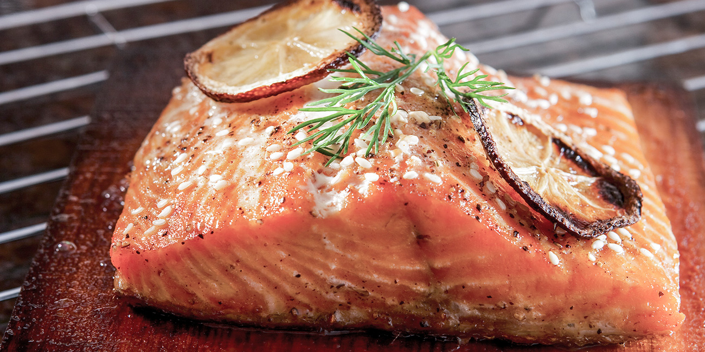

Montery Bay Smoked Salmon

Description:
Salty, umami smoked salmon, grat on bagels with cream cheese
Ingredients:
- 1 teaspoon black pepper
- 1 teaspoon onion powder
- 2 cups soy sauce
- 2 tablespoons brown sugar
- 2 tablespoons honey
- 2 tablespoons vinegar
- 2 teaspoons garlic powder
- A few drops of Tabasco sauce
- Salmon Filets
Steps
- Combine marinade ingredients and mix thoroughly. Set portion aside for basting
- Marinate the fish overnight in the refrigerator.
- Set grill at about 180°.” Smoke the salmon for about 5-8 hours until you like the texture. You can sprinkle the marinade over the fish while it cooks for added flavor and aroma while it smokes.